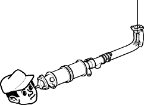
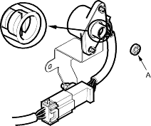

If excessive exhaust system back-pressure is suspected, remove the TWC from the vehicle.
Using a flashlight, make a visual check for plugging, melting or cracking of the catalyst.
Replace the TWC if any of the visible area is damaged or plugged.

- Connect a tachometer.
- Start the engine. Hold the engine at 3,000 rpm (min-1) with no load (in Park or neutral) until the radiator fan comes on, then let it idle.
- Check the idle speed (see page 11-560).
- Warm up and calibrate the CO meter according to the meter manufacturer's instructions.
- Check idle CO with the headlights, heater blower, rear window defogger, cooling fan, and air conditioner off.
Specified CO%:
For cars with TWC model: 0.1 % maximum
For cars without TWC model: 1.0 + 1.0 %
- If unable to obtain this reading:
Without TWC model, adjust by turning the adjusting screw (A) of the IMA.
With TWC model, see DTC troubleshooting index. - If unable to obtain a CO reading of specified % by this procedure, check the tune-up condition.
